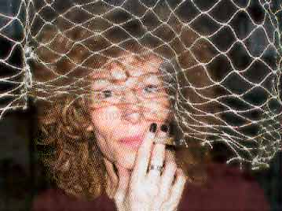
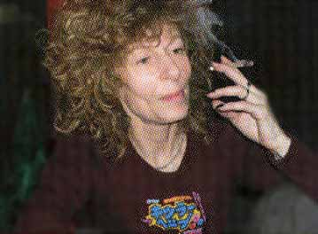
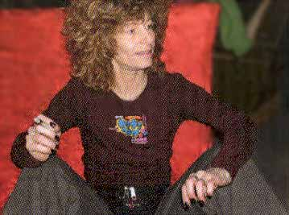

| Marts 2003 |
| FUCK PARFORHOLDET | |
| Skribent | Sune Prahl Knudsen |
| Dialog | sune@panbladet.dk |
| Fotoserie | Ulla Munch-Pedersen |
Zanne

"Jeg har betalt rigeligt til parforholdet gennem mit liv. Jeg har haft kærester fra jeg var 12 til 30 år. Partneren har altid skulle have mere opmærksomhed, end jeg ville give. Og så var det per automatik monogame forhold, hvor jeg skulle bruge energi på at afvise alle de interessante mennesker, som jeg kunne have meningsfuld sex med. Den pris vil jeg ikke betale mere.
Jeg kommer aldrig igen til at have et forhold, hvor der er krav om monogami. Det har jeg forkastet, og det kommer ikke tilbage.
Jeg har brugt masser af tid på meningsløse diskussioner og kampe. Når du er i et parforhold, er der konstant et krav om opmærksomhed, som du skal honorere. og hvis du ikke lever op til det, er der knas.
Parforholdet er et spørgsmål om enten at have dårlig samvittighed over ikke at have tid nok, eller hele tiden at skulle tage højde for et bagland, der har indflydelse på, hvad men kan og skal".
Kan det ikke være meget sundt at forholde og forpligtige sig overfor andre mennesker?
"Det kan man da gøre på så mange andre måder, der er mere gavnlige. Hvis man ikke er særligt tryghedssøgende, er parforholdet ikke den bedste model. man betaler for sin tryghed ved ikke at kunne eksperimentere med ting eller være sammen med andre, som man møder. Alle de ting man gør i et parforhold undtagen sex, kan man jo gøre med familie og venner.
Jeg skal ikke være forelsket i en for at høre en hel livshistorie - det skal de fleste. Det eneste der er lidt ærgeligt ved at være
single, er at man ikke har sex to-tre gange om dagen, som man kan i et parforhold".

"Drømmen om Den Eneste Ene florerer jo som en fed epidemi over det hele, og lægger stilen for hvad der er normalt eller ej.
Hvis man er single, er der en forventning om, at man gerne vil have en kæreste, og når man så siger, at det vil man overhovedet ikke, så ryster de fleste på hovedet.
Hvis du ikke er til kæresteri, så trækker folk sig. Når de fleste gerne vil have en kæreste, så vil et hvert eventuelt møde, som
kunne udvikle sig til noget god sex, blive overskygget af at vedkommende vil have en kæreste. Der bliver lagt en masse energi i det her.

"Det at jeg til enhver tid kan tage en beslutning her og nu, uden at skulle tilpasse mig en andens planlægning. Jeg skal ikke forklare mine vaner og måder at leve på. Eller mine seksuelle udtryksformer. Et hvert socialt samvær sætter jo grænser for udfoldelser. men der er forskel på, om det er begrænsninger, som der er gode grunde til at leve under eller ej. Jeg vil ikke have begrænsninger, hvis det blodt er for at opretholde illusionen om Den Eneste Ene".
Print denne side